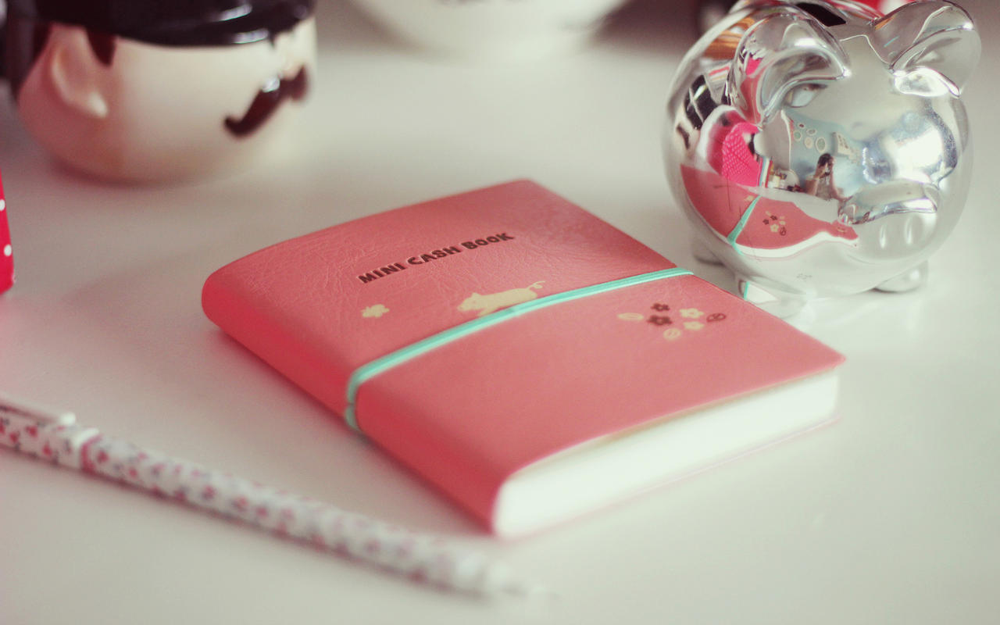

在人满为患的公交上，人们能够想象到的场面是人挤人、人挨人，然而在我的旁边确实另类的场面，明显我的周围空出了一片，形成一个标准的环形。为什么在挤不下脚的公交车上会出现此等奇景呢?最主要的原因是我身上散发着一股明显的异味，大汗淋漓走上车，又被空调吹的直往别人鼻子里钻。
其实这样我也十分尴尬，而我能做的只是收一收自己的胳膊，心想明明是用过止汗露才出来的，怎么还这么重的汗味。直到有一天妹妹说的一句话惊醒了我：“哥，你有狐臭，要不去医院看看吧!”他这才知道，原来自己得了腋臭，就是俗称的狐臭，而不是我自己以为的汗味重。
一直以来我都是一个自尊心很强的人，也不好意思再去问别人，只是偷偷去店买那些据说“一吃见效”的袪臭药。吃了差不多五、六种，丝毫没有效果。自从我知道自己有了狐臭之后，心里就一直会惦记这件事，自卑的我都感觉快抑郁了。后来，一个成功摆脱狐臭的网友让我去了解一下佰迪清，于是我在网上搜到了佰迪清的官方网站，在里面仔细看了佰迪清的相关资料和狐友们的成功案例，感触颇深。

我通过和佰迪清在线客服一番畅谈后，我才明白了腋臭其实不是什么见不得人的病，它和遗传、青春期内分泌以及个人爱好习惯都有很大的关系。我平时就喜欢生吃洋葱和大蒜，还喜欢运动，刺激了大汗腺的分泌，同时夏季高温潮湿的环境让细菌有了良好的生存环境，这才造成了腋臭。
佰迪清客服指出佰迪清坚持“健康除臭，清爽肌肤”的理念，以天然植物精华为原料，采用传统配方与现代科技相结合的创新模式，从天然植物中提取大量祛湿、抑菌因子，并添加大量细胞修复配方和多重营养润肤成分，采用美国先进制取技术和德国一流加工设备经过提纯、浓缩、保存、延时等多道繁琐而严谨的精密工艺深加工而成。根除狐臭不仅效果好，而且无任何副作用。
于是我就在佰迪清官网按照客服的建议订购了两个周期的，刚开始用的时候感觉用着很滋润，一个周期后身上的狐臭就开始慢慢变淡，也不用再总是因为狐臭夹着膀子了，两个周期用完之后身上的狐臭就没有了，自己那挡不住的喜悦感油然而生，能够治好狐臭是我这么长时间以来最开心的事情。
我真的很感谢佰迪清，是佰迪清让我再一次找回了自信，也希望更多跟我一样的朋友能够用佰迪清治好身上的狐臭。